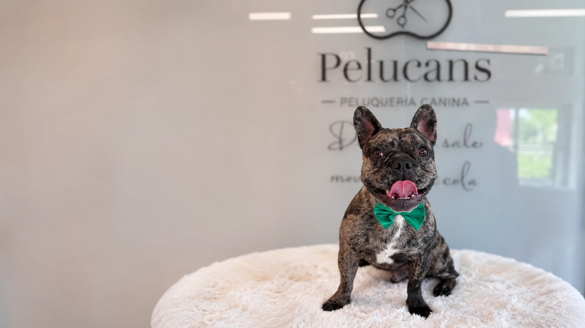
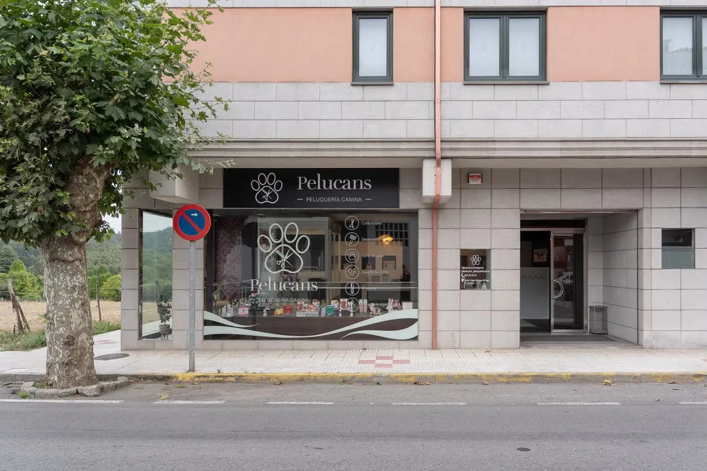

Máis que un corte,
é amor e coidado.
Con Shadia, cada can ten o seu momento. Perruquería canina na Laracha: un a un, sen gaiolas e con todo o tempo que necesita.
Nove coidados,
un mesmo agarimo.
Todos fanse con cita previa e ao seu ritmo. Entra en cada un para ver como o facemos, que inclúe e a que cans vai dirixido.
Ver todos os servizos- 01
 Corte a tesoiraUn corte pensado para o seu manto, a súa personalidade e a vosa vida xuntos.Estilismo
Corte a tesoiraUn corte pensado para o seu manto, a súa personalidade e a vosa vida xuntos.Estilismo - 02
 StrippingTraballo manual para respectar a textura natural do manto.Estilismo
StrippingTraballo manual para respectar a textura natural do manto.Estilismo - 03
 DeslanadoRetiramos o subpelo solto respectando a estrutura do manto.Manto e hixiene
DeslanadoRetiramos o subpelo solto respectando a estrutura do manto.Manto e hixiene - 04
 Baño de ozonoUnha opción de coidado complementario, sempre adaptada á súa pel.Pel e benestar
Baño de ozonoUnha opción de coidado complementario, sempre adaptada á súa pel.Pel e benestar - 05
 DermocosméticaCosmética canina elixida para a súa pel, o seu pelo e a súa rutina.Pel e benestar
DermocosméticaCosmética canina elixida para a súa pel, o seu pelo e a súa rutina.Pel e benestar - 06
 Baño e coidado do mantoBaño, secado e cepillado con atención aos pequenos detalles.Manto e hixiene
Baño e coidado do mantoBaño, secado e cepillado con atención aos pequenos detalles.Manto e hixiene - 07
 Corte de unllasRevisión e corte coidadoso, respectando os seus límites.Manto e hixiene
Corte de unllasRevisión e corte coidadoso, respectando os seus límites.Manto e hixiene - 08
 Alimentación especializadaOpcións de alimentación e unha conversa para elixir con criterio.Na casa
Alimentación especializadaOpcións de alimentación e unha conversa para elixir con criterio.Na casa - 09
 AsesoramentoConsellos prácticos de cepillado, cosmética e mantemento.Na casa
AsesoramentoConsellos prácticos de cepillado, cosmética e mantemento.Na casa


Aquí véñese
a estar a gusto.
Unha boa perruquería canina non é só que saian guapos… tamén é coidar do seu benestar durante todo o proceso.
- 01
Atención un a un
Traballamos cun só can cada vez para dedicarlle toda a atención.
- 02
Sen gaiolas, sen présas
Non hai gaiolas de espera e reservamos o tempo que cada manto precisa.
- 03
Orelleiras no secado
Protexemos os seus oídos do ruído do secador cando o precisan.
- 04
Para todos os tamaños
Bañeira de aceiro inoxidable adaptada a razas xigantes: desde un maltés ata un San Bernardo.
O cambio
se nótase.
Desliza cada foto para comparar. Son sesións reais no salón: sen filtros e sen retoques.

 AntesDespois
AntesDespoisO agarimo nótase.
E cóntase.
Recensións de familias que repiten: unhas de Google, outras das historias de Instagram e de Páxinas Galegas.
«Trato inmellorable. Tanto cos peludos como cos clientes. A miña cadeliña saíu, ademais de preciosa, encantada cos mimos recibidos en Pelucans. Sen dúbida volveremos.»
«Marabillosa e moi ben de prezo, a atención xenial e o trato cos peludos exquisito. Leva atendendo aos meus cans uns anos e sempre un 10.»
«Hoxe Jagger, o meu pastor alemán, fixo uso dos servizos de Pelucans e saíu moi satisfeito, igual ca min. Bonitas e coidadas instalacións, trato exquisito e bos prezos.»
Un día en Pelucans.
Os destacados e reels do seu Instagram, sen saír da web. Preme un círculo para percorrelo ou un reel para velo con son.
Seguir en InstagramO seu día a día,
sen filtros.En directo

Cada publicación é un peludo de verdade, bañado, cortado e mimado no salón. Preme calquera foto para ir á publicación orixinal.


Para a casa, para o paseo,
para a choiva.
Cosmética PSH e Artero, xoguetes KONG, arneses con deseño e chuvasqueiros reversibles. Consulta stock e prezos no seu catálogo de WhatsApp. Tamén somos punto de recollida Vinted Go.


Esperámoste en
A Laracha.
Avenida Doutor López Astray, 40. Sempre con cita previa e con sitio para aparcar.
Cando vir Horario
16:00–19:00
Aparcamento preto da porta. Punto Vinted Go.

O agarimo está
nos detalles.
Mans, ferramentas e pequenos xestos do día a día. Fotografías reais do salón, para ver tamén o que hai detrás do acabado.
A ferramenta importa
Un xesto de cepillado nun manto de pelo curto.
Mans con oficio
As mans de Shadia durante o baño de Bruce.
Os pequenos coidados
Preparación do secado con protección para o ruído.
Aprender a coidalo.
Tamén é querelo.
Encantaranos coñecer o teu peludo.
Cóntanos como é, que lle gusta e que precisa. Do resto encargámonos nós, con calma.